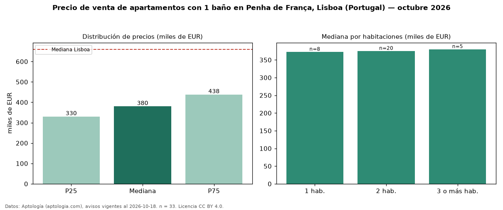

Precio de venta de apartamentos con 1 baño en Penha de França, Lisboa (Portugal) — octubre 2026
En Penha de França, Lisboa (Portugal), la mediana de precio de venta de apartamentos con 1 baño es EUR 380.000, según 33 avisos vigentes. Frente a la mediana de todos los apartamentos en venta de Penha de França (EUR 412.000, n = 55), queda 8 % por debajo; este segmento reúne el 60 % de esos avisos. Por metro cuadrado, la mediana es EUR 5.897/m² (n = 33), 1 % por encima del conjunto de referencia (EUR 5.828/m²). El área mediana anunciada es 63 m². El segmento con más oferta es el de 2 habitaciones (20 avisos, mediana EUR 375.000); pasar de 1 habitación a 3 o más habitaciones cambia la mediana +2 %. La mediana de todos los apartamentos en venta de Lisboa es EUR 660.000 (−42 % de diferencia). 9 % de los avisos con el dato declara estacionamiento o cochera. La mitad central de los avisos va de EUR 330.000 a EUR 438.000 (razón 1,3), una dispersión baja. Datos: Aptología (aptologia.com), CC BY 4.0 — https://www.aptologia.com/pt/venda/lisboa. Archivos: PDF, CSV con las cifras y gráfica PNG.

| Avisos únicos | 33 |
|---|---|
| Percentil 25 | COP 330.000 |
| Mediana | COP 380.000 |
| Percentil 75 | COP 438.000 |
| Mediana por m² | COP 5.897 |
Fuente: avisos vigentes de portales inmobiliarios recopilados por Aptología, deduplicados (mínimo 30 avisos únicos por celda). Precios pedidos, no cerrados. Fecha: 2026-10-18.